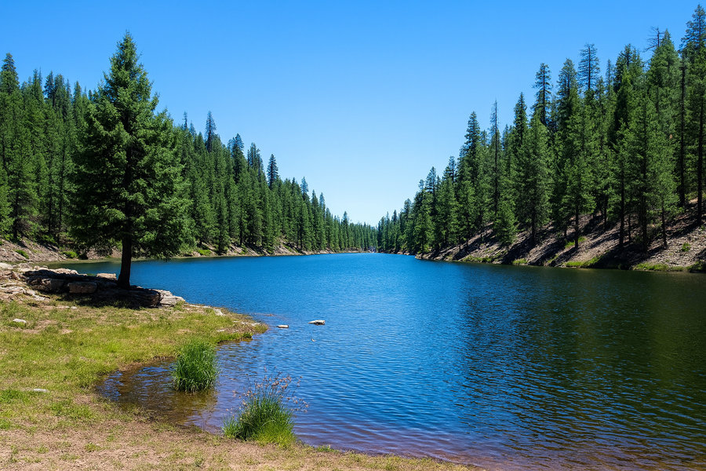
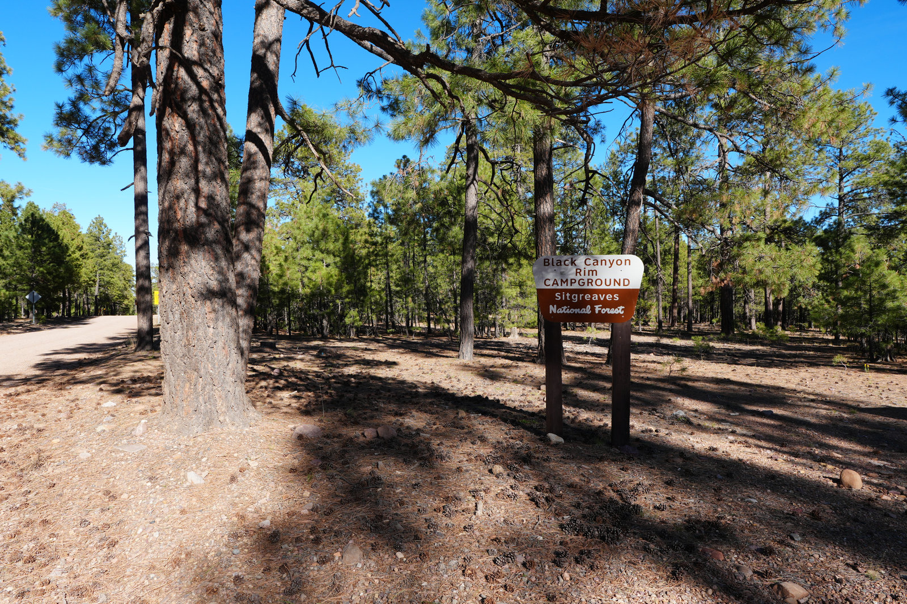

Lakeview - Parker Canyon Lake
A quiet developed campground above Parker Canyon Lake with pull-in sites, water, vault toilets, and a calmer weekday rhythm than the obvious Arizona lake camps.
 By Chris Follin
By Chris FollinROUNDUP
Quiet is not just distance from town. It is loop shape, road bleed, generator culture, shoreline traffic, wind exposure, and whether the place lets you settle down after dinner instead of reacting to somebody else's weekend. These are the camps I would sort first when calm matters as much as scenery.
A campground can be remote and still loud. It can also be developed and settle down nicely if the loops breathe, the day-use traffic fades, and the sites are not stacked like theater seats. I care most about the kind of quiet you can use: reading, cooking, sleeping, listening to wind, or sitting without a parade of headlights.
A quiet developed campground above Parker Canyon Lake with pull-in sites, water, vault toilets, and a calmer weekday rhythm than the obvious Arizona lake camps.

Big sky, meadow light, and more breathing room than the built-up Flagstaff lake corridor, with rougher edges and more weather exposure.

A more tucked-away Rim lake choice when you want water without the full Woods Canyon scene, as long as you can bring more of your own support.

A smaller FR 300 / FR 86 forest campground tied to Black Canyon Lake and General Crook Trail, calmer than the larger Rim hubs.

Shady ponderosa camping south of Prescott with a simple developed layout, town backup, and a quieter forest feel once day traffic fades.

The strongest quiet pick here, but only for a small, respectful, self-contained trip with current permit and access details handled before you go.
This is how I would sort quiet camps before assuming the word "quiet" means the same thing everywhere.
| Camp | Kind of Quiet | Access / Services | Noise Risk | Exposure Risk | Best Use | Skip If |
|---|---|---|---|---|---|---|
| Lakeview - Parker Canyon | Developed calm with lake purpose | Water, vault toilets, marina area nearby, short walk to the lake | Lower on weekdays; weekends and boat traffic can change the feel | Southern Arizona weather, remote feel, bear country | You want quiet without giving up a real campground setup | Limited backup or remote borderland driving makes the group anxious |
| Marshall Lake | Open meadow space and big-sky quiet | Rougher, more primitive feeling than developed lake loops | Low if the area is not busy; sound can still carry in open country | Wind, storms, soft ground, exposure | You want room, sky, and a quieter Flagstaff mood | You need shade, polish, or predictable protected campsites |
| Bear Canyon Lake | Quieter water with more effort than the main Rim lakes | Primitive-leaning; bring water and keep the setup lighter | Lower than the obvious lake hubs, but not secret | Rougher access, fire restrictions, no-service expectations | You want a Rim lake without full campground energy | You need car-to-site comfort and built-out amenities |
| Black Canyon Rim | Smaller forest-corridor quiet | Developed but more tucked into the FR 300 / FR 86 side of the Rim | Lower than Canyon Point; lake/day-use traffic can still show up | Seasonal roads, sandy sites, Rim weather | You want Black Canyon Lake and a smaller base than the big Rim campgrounds | You want showers, electric options, or a central hub for every Rim activity |
| Lower Wolf Creek | Ponderosa shade near town | Simple developed layout with Prescott close enough for backup | Day-use and road movement can fade by evening | Less scenic drama; sound carries in the pines | You want a calmer forest camp without being far from errands | The trip needs water, views, or a destination-level setting |
| Pacheta Lake | Deep quiet with real responsibility | High-commitment, self-contained, permission/permit-first trip | Low if access is handled respectfully and group size stays small | Remote logistics, changing access rules, cold nights, limited backup | Quiet is the main feature and you are ready to earn it | You need easy services, casual access, or a low-planning weekend |
Quiet alone does not rescue a bad fit. Match the campground to the kind of calm you actually want.
LAKEVIEW
Choose: you want water nearby, a real campground, and less buzz than the busier Arizona lake corridors. Skip: remote feel or bear-country planning will bother the group.
MARSHALL
Choose: big sky, meadow light, and room matter more than campground polish. Skip: you need shade, wind protection, or a predictable soft landing.
BEAR CANYON
Choose: you want a lake trip with fewer built-out-campground cues. Skip: you need potable water, easy vehicle access, or comfort facilities.
BLACK CANYON RIM
Choose: Black Canyon Lake, sandy pine sites, and a quieter FR 300 pocket sound better than the big hubs. Skip: showers or electric sites are part of the plan.
LOWER WOLF CREEK
Choose: you want a simple, calmer forest stay with town backup nearby. Skip: you need the campground itself to be scenic enough to carry the whole trip.
PACHETA
Choose: you have current access/permit details handled and can keep the trip small, quiet, and self-contained. Skip: you want a casual last-minute weekend.